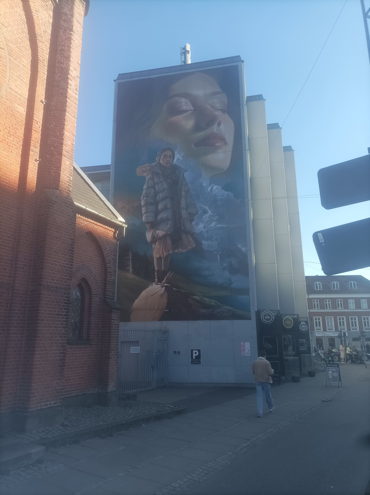
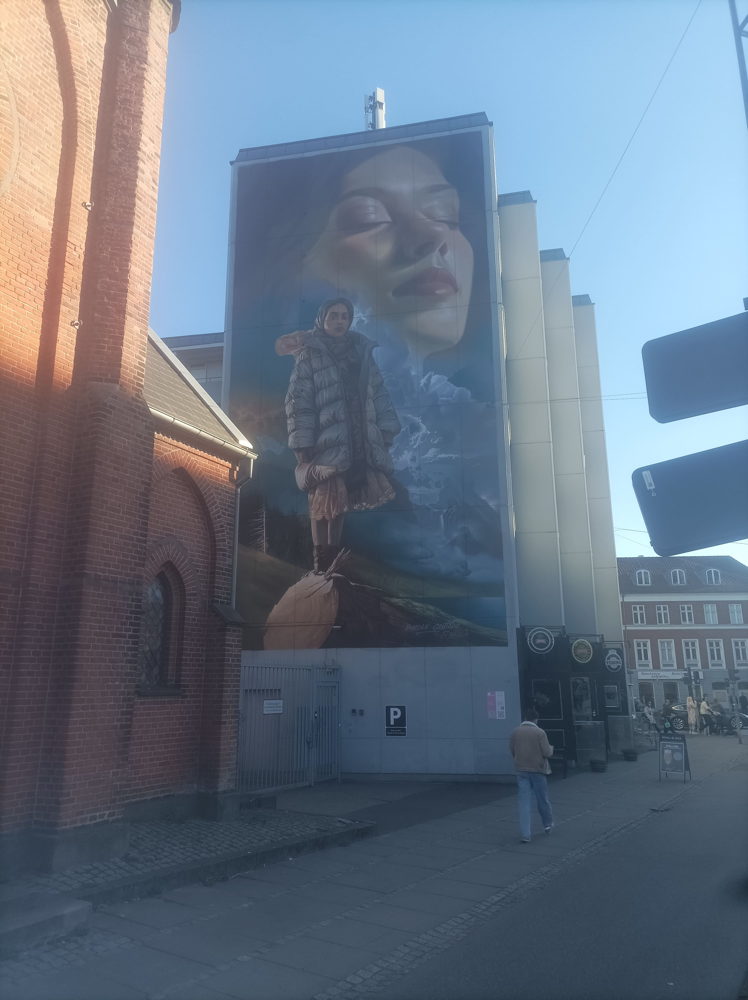

Blog de Maumau à Aarhus

30 mars
Dimanche 30 au matin, je quittai Clermont chargé comme une mule, le contenu de mes sacs allant du pratique (vêtements...) au luxe (vidéoprojecteur !) en passant par l'indispensable (pastis.)

Mon premier flixbus ne m'emmenait pas bien loin, puisque je m'arrêtais à Paris. Je n'avais pas vraiment d'option de correspondance, et un ami pouvait m'hébergeait dans sa colloc ce qui m'a bien rendu service ! En revanche, il s'était bien gardé de me prévenir qu'une de ses collocs fêtait son anniversaire le soir-même ! Enfin, une dernière petite soirée en France ne m'a pas fait de mal pour me changer un peu les idées :)


1 avril
Je n'ai rien à raconter de spécial sur le 31 mars : j'ai décuvé pendant la matinée, glandé avec mon ami et ses collocs en début d'après-midi, et suis parti peu après. On a roulé toute la nuit, j'ai eu le temps d'une correspondance pour manger un hamburger à Hambourg (haha), et un peu plus tard dans l'après-midi, je passai la frontière.

On a eu des contrôles de douanes aux deux frontiètes (Allemagne et Danemark), qui se sont évidemment déroulés plus rapidement pour moi que pour la famille érythréenne dont j'avais la mère comme voisine de siège. Toutefois, je n'ai pas pu m'empêcher de constater une différence notoire de sourire entre les douaniers allemands et danois... Je ne dirai pas lesquels étaient plus chaleureux !
Un trajet passé collé au hublot plus tard, me voilà dans la ville qui va m'héberger les prochains mois. Il était trop tard pour que je récupère les clés de mon logement, mais j'avais déjà réservé une chambre dans une auberge de jeunesse qui avait ouvert... la semaine précédente. Ça se sentait : le hall et les cages d'escaliers n'étaient pas encore parfaitement finis, mais surtout, c'était entièrement vide ! Personne dans le dortoir de dix où je dormais, ça à la rigueur je n'ai pas détesté. Mais aussi personne à l'accueil : tout se faisait via une clé en ligne sur mon téléphone. Même le jeune gen-Z que je suis était perturbé.
L'étrange bâtiment avec une sorte d'auréole arc-en-ciel que je voyais depuis ma chambre, c'est ARoS, un musée d'art et un des bâtiments les plus emblématiques de la ville. Un mois plus tard je n'y suis pas encore allé, essentiellement parce que c'est cher, mais il faudra bien que je le fasse à un moment. Et l'arc-en-ciel, c'est simplement un couloir circulaire panoramique vide sur le toit. De ce qu'on m'a dit, c'est 5€ supplémentaires pour y avoir accès. 5€ pour un couloir vide et un panorama obstrué par des vitres teintées, donc. Pourquoi pas.

2 avril
Une journée incroyablement dense. Je suis parti le matin de mon auberge de jeunesse cheloue, et je suis d'abord allé à l'accueil international de l'université pour récupérer les clés de mon logement. Ensuite j'ai pris le bus jusqu'au logement en question, à l'autre bout de la ville, et j'ai enfin pu poser mes affaires. Mais pas le temps de ranger : je repartais immédiatement à l'université pour rencontrer ma tutrice de stage, qui partait le soir-même en séminaire à San Francisco pour trois semaines, et il fallait absolumment qu'elle me donne un badge d'accès avant. On a un peu parlé et fait connaissance, mais on s'est rapidement dit au-revoir, car je devais filer au service de l'immigration pour me valider un certificat de résidence, nécessaire pour rester plus de trois mois. Après ça, enfin, j'ai pu rentrer dans ma chambre, ranger mes affaires, et m'écrouler sur mon lit.
3 avril
On me laissait un jour de repos pour emménager, et j'en avais bien besoin. J'ai dormi jusqu'à près de 15h, et l'après-midi je n'ai pas pu résister à l'envie d'aller faire un premier petit tour en ville. Je suis un piètre photographe et lui rend mal hommage, mais c'est absolumment charmant. On a presque toujours l'impression d'être dans un petite ville mignonne, mais en réalité c'est plus grand que Bordeaux ! Les deux choses frappantes pour un français restent quand-même l'omniprésence des vélos (pistes cyclables et miriades de vélos laissés sans anti-vol sur les trottoirs), et la propreté impeccable des rues ! Bref, c'est une ville où on peut se plaire.


 



4 avril
N'oublions pas que je suis quand-même ici pour travailler. Du coup, le vendredi de ma première semaine, je suis retourné à l'université. Mais cette fois, je n'allais pas à la fac de philosophie où travaille ma tutrice, mais à celle de psychologie. Arthur, un collaborateur du groupe de recherche de ma tutrice est un tout jeune chercheur, docteur depuis cette année, qui fait de la psychologie expérimentale avec un intérêt pour les interactions homme-machine. Or il a une idée d'expérience que je détaillerai plus une autre fois, mais qui demande l'utilisation d'un chatbot, basé sur des modèles de langages IA, mais formés pour les besoins de l'expérience. Bref, ça demande tout un travail d'ai-engineering, qui n'était pas au programme de son master de psychologie, pas plus qu'il ne l'était dans le mien. Mais la différence, c'est que moi j'ai le bagage suffisant pour m'auto-former !
En sortant de la fac, je suis rentré chez moi à pieds, et j'en ai profité pour faire un petit tour par le port. Le Kattegat ça n'est pas la Méditerrannée, mais c'est déjà mieux que Clermont-Ferrand et son pitoyable lac de Cournon.


6 avril
Bon, je me fais harceleler par ma mère pour ça, il est temps que je révèle enfin le nid douillet qui m'abrite et continuera de m'abriter jusqu'à mi-août. Tadaa !


Voilà, ben ça fait le taf hein ? Y'a beaucoup d'espace, qui ne sert à rien en soi, mais au moins ça me fait un grand mur blanc dégagé, ce qui est pratique pour le vidéoprojecteur. C'est là que je passe la plupart de mon temps, mais je suis naturellement forcé de me rendre aux salles de bains, toilettes, et cuisines communes. D'ailleurs, si je me suis habitué presque instantanément à devoir sortir pour la salle de bain et les toilettes, je commence tout juste, un mois plus tard, à être à l'aise avec la cuisine commune. Le truc, c'est qu'il y a toujours une ribambelle de gens qui y traînent. Or, j'ai beau être quelqu'un de plutôt (voire très) sociable, je ne suis pas vraiment dans cet état d'esprit quand je rentre me poser chez moi le soir. J'aimerais me déconnecter du monde et profiter d'un film dans ma bulle, et le fait de casser ça pour aller dans un lieu de vie populaire pour me faire un truc à grignoter ou à boire, c'est très inconfortable. Mais ça va de mieux en mieux, à la fin je n'y penserai sans doute plus vraiment. Et quand je serai de retour dans mon appartement à Clermont, je profiterai de mon luxe à sa juste valeur.

7 avril
Si je passe beaucoup de temps dans ma chambre, j'en passe aussi une certaine quantité dans mon bureau à la fac ! J'en ai un juste pour moi à la fac de philosophie, mais comme je travaille avec Arthur à la fac de psychologie pour l'instant, on m'a trouvé un endroit ici. Je partage le bureau avec deux personnes. D'abord Yun, une coréeene adoptée au Danemark qui a grandi Aarhus, fait ses études ici, et travaillé comme psychologue clinicienne pendant 10 ans. Elle a commencé à venir donner des cours comme intervenante à l'université, ça lui a plu, donc maintenant elle fait un doctorat à mi-temps. Ensuite, il y a Sofie, une étudiante danoise à l'université d'Aarhus qui fait une sorte de stage de recherche pour finir son master. "Une sorte" parce qu'elle a toujours quelques cours à côté, donc elle aussi n'est là qu'à mi-temps. Toutes deux sont ultra sympathiques, et Arthur qui passe souvent venir me voir est adorable également. Je ne saurais espérer une meilleure ambiance de travail :)


12 avril
Après une semaine pour m'installer et une première véritable semaine à la fac pour prendre mes marques, je continuais à me coucher à 20h et dormir 10h par nuit pour calmer la charge émotionnelle. Il était temps de passer à une méthode plus efficace pour relâcher toute la pression. Et quoi de mieux pour ça que de m'entamer la tronche à la bière danoise avant de sortir en rave party psytrance ? Question rhétorique : rien évidemment, c'était génial !


Je me suis un peu perdu sur le chemin retour que je faisais titubant à trois heures du matin, mais mes errances m'ont fait trouver un panneau d'entrée dans la ville, ce qui ne m'a vraisemblablement pas laissé indifférent.
15 avril
Le Danemark est un pays chelou. Et pour appuyer mon propos, j'aimerais dans cette entrée vous partager certains de mes premiers Danish Facts préférés, en espérant en avoir d'autre à vous partager plus tard.
Danish Fact #1 : Les nombres. On pense à tort en France que notre façon de nommer les nombres (4*20+12 pour 92) est farfelue. Et bien les danois sont encore un niveau au-dessus de nous. Je ne vais pas prendre le risque d'essayer de réexpliquer ça moi-même, je vous renvoie vers ce blog d'un gars qui se plie à l'exerice à ma place : lien
Danish Fact #2 : Les notes. En France, on a l'habitude d'avoir des notes qui vont de 0 à 20. Au japon, l'échelle habituelle va de 0 à 100. Le suisses sont un peu plus originaux, puisque les notes vont de 1 à 6. Mais ils restent très loin d'égaler la fantaisie du Danemark, et leur barème allant de -3 à 12.
Danish Fact #3 : La monnaie. La monnaie au Danemark est la couronne danoise (DKK). Elle est toutefois indéxée sur l'euro, avec un rapport de change 1 EUR = 7.5 DKK. À peu près, mais ma banque fait l'arrondi et j'avoue que la division par 7.5 est déjà une assez bonne gymnastique intellectuelle à mon goût. Bref, et donc un centième de couronne, c'est un øre, soit 7.5 fois moins qu'un centime, c'est à dire vraiment pas grand chose. La banque danoise en a conscience, et c'est pour ça que la plus petite pièce de monnaie s'arrête à 50 øre = 0.5 DKK. Mais là où ça devient rigolo, c'est qu'il n'y a aucune obligation à ce que les prix soient divisibles par 0.5 ! Par exemple, un billet de bus c'est 26.80 DKK. Il n'est donc pas possible de payer un billet de bus en espèce. Enfin, si, mais on doit arrondir au supérieur et ne pas s'attendre à ce qu'on nous rende la monnaie.
Danish Fact #4 : Les claviers. Les claviers danois sont des QWERTY légèrement adaptés pour avoir un accès rapide à leurs lettres cheloues (ø, å, æ). Tout esprit sensé aurait donc rajouté une touche pour chacune de ces lettres, qui passeraient majuscules si on appuie sur shift en même temps, comme c'est le cas pour l'intégralité des autres lettres. Mais vous commencez à connaître les danois : ils ont opté pour une autre solution. Je vous laisse méditer.
17 avril
On a un groupe Whatsapp de la résidence, et ce jour-là, quelqu'un a proposé qu'on organise un grand repas partagé pour faire connaissance les uns avec les autres, comme on avait été nombreux à arriver récemment. J'avais déjà rapidement fait connaissance avec certains de mes "floormates" dans la cuisine, mais c'est la première fois qu'on passait vraiment du temps ensemble, et c'était bien chouette !
18 avril
Comme le repas partagé de la veille s'était bien passé, on avait été plusieurs à décider de sortir le lendemain, pour profiter un peu de la friday night à Aarhus. On a eu plusieurs lâcheurs entre temps, mais on a quand-même pu former une petite équipe avec laquelle on a exploré deux bars assez peu convaincants, une boîte de nuit tout aussi peu satisfaisante, et une deuxième boîte pire encore. Mais bon, si on a pu rayer quelques lieux, il en reste heureusement plein d'autres en ville !

24 avril

Ce jour-là, alors que je gambadais comme à mon habitude dans les allées du supermarché près de ma résidence, j'ai fait une découverte qui a su me réjouir au plus haut point. Voyez-vous, il y a à l'ISIMA un Bureau des étudiants qui tient un foyer au sein duquel nous pouvons nous procurer moyennant paiement une ribambelle de choses à grignoter et à boire. Afin d'exacerber nos pulsions dépensières, un classement est tenu rendant honneur au plus gros acheteur de chaque article proposé. Or, peu avant mon départ au Danemark, j'ai pris la tête sur un article d'exception : le divin Cacolac. Je pensais devoir faire un trait sur ce plaisir coupable qu'est le mien, mais pour mon plus grand plaisir, je sais désormais où me procurer l'équivalent danois du divin Cacolac !
25 avril
Que vous évoque le 25 avril 2025 ? Si vous répondez l'anniversaire de Yann Guillon ma masterclass de petit frère adoré, vous n'aurez certes pas tort, mais vous trahissez surtout que vous n'êtes pas un étudiant Aarhusois (pas sûr du gentilé). Car se déroulait ici le plus gros événement organisé par des étudiants de toute la confédération nordique ! Information que m'a colportée Sofie, mon office mate, à débunker donc. Son nom : Kapsejlads. Le principe : une course-relai en canoë, avec des consignes de consommation d'alcool au moment des relais que je n'ai pas très bien comprises. Les douze équipes correspondent à des associations de douze filières différentes de l'université, et la préparation est intense : costumes, clip musical, recherche de sponsors, c'est presque comparable aux campagnes BDE des grandes écoles en France. Quant à ce qu'il y a à gagner, c'est très simple : la gloire éternelle, et l'affirmation de la suprématie de ta filière sur les autres. Évidemment j'étais pour la psychologie, mais cette année la victoire est revenue aux dentiers.
On ne dirait pas forcément présenté comme ça, mais l'événément est un truc tellement immense ici que beaucoup d'étudiants arrivent dès deux/trois heures du matin alors que la course ne commence qu'à quinze heures. Alors évidemment, comme il faut faire passer le temps, on s'abreuve de quantités d'alcool désapprouvées par le ministère de la santé, on met de la grosse musique à fond, et on chante l'hymne danois à poil dans les arbres. On retrouve d'ailleurs cet intérêt typiquement nordique pour la nudité lors d'un autre moment-clé de la journée : la course nue autour du lac. Course mixte attention, on est dans un pays développé. J'ai, à mon grand dam, raté la course, mais on m'a confirmé que les jeunes athlètes danois valaient le coup d'œil.


En rentrant des Kapsejlads, j'étais d'humeur à profiter de la folie estudiantine du soir portée par ceux qui ne s'étaient pas encore écroulés au cours de la journée. Du coup j'ai rejoint Lucas, un ami brésilien de ma résidence, et on est allé ensemble tester le lieu étudiant homo d'Aarhus : le GBar. Indiuits en erreur par le nom, on y est arrivé à l'heure à laquelle on arriverait à un bar, et le dancefloor était vide à en être gêné. Mais peu à peu les choses se mirent en route, et on a clubbé comme des petits fifous jusqu'à trois heures du matin.


Après cette chouette soirée, on a été ébloui par la vue nocturne du fleuve "Aarhus", et j'immortalisai ce moment magique. Enfin, j'ai essayé. Heureusement qu'il me reste le souvenir.
29 avril
Ma résidence est atrocément située à l'autre extrémité de la ville par rapport à la fac, il est donc inenvisageable de m'y rendre à pieds, sauf que le bus coûte débilement cher. La solution est simple : faire comme 50% des danois qui l'utilisent au moins une fois par semaine, me déplacer à vélo ! Je suis allé dans une boutique qui fait de la location mensuelle reconductible en ligne, c'est à dire que jusqu'à mon départ, mon bébé est à moi !

La circulation urbaine a dû intégrer les besoins des cyclistes, et clairement, ça change de la France. Mais du coup, comme il y a partout des pistes cyclables assez larges pour être appelées deux-voies et qu'elles sont massivement utilisées, on voit apparaître de nouvelles catégories d'emmerdeurs propres à cet écosystème. Emmerdeur n°1 : les scooters qui nous piquent notre voie. Emmerdeur n°2 : les couples ou duos d'amis qui roulent côte à côte à deux à l'heure tout en discutant et qui ne se laissent pas doubler. Emmerdeur n°3 : ceux qui ont un vélo avec une espèce de cabine pour bébé hyper large à l'avant, qui fument tout le monde par la gauche au feu, puis qui redémarrent à deux à l'heure et ralentissent toute la file derrière qui ne peut pas les doubler. Emmerdeur n°4 : les sportifs trop confiants qui considèrent qu'une troisième voie est possible et doublent celui qui est en train de te doubler.
Enfin bon, la vérité c'est que moi, tous ces emmerdeurs ne m'emmerdent pas plus que ça. Mon vrai problème, c'est que je suis une énorme larve, qui arrive chaque matin tout rouge et essouflé des 20 minutes de côte que je viens de me taper, et qu'à côté de ça, des salopards de danois frais comme des gardons me doublent à toute berzingue sans le moindre effort. Je reviendrai certainement en France dans le meilleur état de santé de mon existence, mais pour l'instant l'humilité s'impose.
1 mai
"Si tu veux avoir la meilleure vue sur Aarhus sans payer, il faut que tu ailles à Salling !" me dit un jour Yun, une de mes camarades de bureau, à la traduction près. Ainsi soit-il, je me suis donc rendu à Salling, sans avoir la moindre idée de ce qu'était Salling. Et bien il s'agit d'une sorte de supermarché "de luxe", avec des galeries de vêtements français, de parfums français, le meilleur choix de la ville en fromages français, une cave à vin immense et du pathé. Bon, j'exagère, les italiens et les anglais avaient aussi droit à leur part de reconnaissance. Ce lieu étonnant est doté d'un toit-terrasse, sur lequel on trouve un café, un bar à cocktail, mais surtout une vue panoramique des plus sympathiques ! J'y ai d'ailleurs rencontré d'autres français pour la première fois de mon périple sous la forme de deux étudiantes erasmus. Décidément, on se sent à Salling comme dans une ambassade.


3 mai
Parmi les gens que j'ai rencontrés à Aarhus, les deux que je pourrais qualifier de mes "meilleurs amis" sont Narges et Lucas de ma résidence. Aujourd'hui on était censé partir explorer la région ensemble, mais face aux imprévus météorologiques, on a repoussé ça à une prochaine fois. On est sorti prendre un café à la place, et on en a profité pour errer un peu dans la ville.
Mauvais calcul de notre part : nos errances s'éternisèrent tant que rapidement, plus aucun café n'était ouvert. En revanche, on atteignait une heure à laquelle il était pertinent de manger, et Lucas nous a alors proposé un lieu qui m'avait été fortement recommandé par ma camarade de bureau Sofie quelques jours auparavant : Street Food. Le concept est assez similaire aux Halles du Brézet pour mes clermontois sûrs, et pour les autres, c'est sans doute assez similaire à quelque chose chez vous aussi. En fait, un ensemble de petits stands proposant de la street food de différentes sortes et de différentes origines se sont réunis dans un même lieu, on a donc un choix immense, chacun peut se laisser aller à ses propres envies, et c'est en général délicieux. Le lieu est d'autant plus agréable qu'en plus de s'y régaler, les prix sont très raisonnables pour le Danemark, et que l'extérieur a un petit air du genre de lieux un peu hippie qu'on peut trouver en festival typiquement. Donc pluie à part, la soirée avait un petit air de vacances estivales !

5 mai
En France je suis accro au cinéma, donc naturellement, je rêvais d'aller me faire au moins une séance au Danemark ! Je fis teoutefois rapidement face à un obstacle des plus repoussants : le cinéma coûte cher, très cher ici. Après conversion, on tombe entre 16 et 17 euros la séance. J'avais beau être curieux, je ne me voyais pas vraiment dépenser cette somme pour un film auquel j'allais, en soi, ne rien comprendre. Fort heureusement, il existe en France un organisme cherchant à diffuser notre culture à l'international appelé l'Institut Français, dont la branche danoise a la bonne idée de proposer des diffusions de films français en VO les lundis soirs grâce à des cinémas partenaires dans les trois plus grandes villes danoises, ce qui inclut Aarhus !
Je m'en allai donc à Øst For Paradis, ce qu'il y a de plus "art et essai" comme cinéma dans la ville, pour voir "En Fanfare", film d'Emmanuel Courcol avec Pierre Lottin et Benjamin Lavernhe que je n'avais pas eu le temps d'aller voir en France, et qui valait carrément le coup d'œil. La salle était complète, et je faisais vraiment tâche au milieu des groupes de vieux danois bourgeois. Il y avait aussi un verre de vin rouge français offert à la fin de la séance, et il était à ma grande surprise très bon ! Première fois que je goûtais un vin buvable au Danemark, c'était une expérience très plaisante. Bref, au final c'était une soirée bien sympathique. Le lendemain j'en ai parlé à Yun, une de mes camarades de bureau, à la fois cinéphile et francophile, en lui mentionnant que dans quelques semaines sera projeté "les femmes au balcon", l'excellent premier film de Noémie Merlant comme réalisatrice. Je retournerai donc certainement vivre l'expérience Øst For Paradis, cette fois-ci accompagné.
8 mai
Il est temps pour moi de vous faire un aveu : j'ai installé Tinder. Après tout, c'est un moyen comme un autre de rencontrer des gens, et comme ça n'est pas évident dans un pays étranger, surtout quand on y est pour le travail, bah c'est toujours pris. Loin de moi toute envie de frimer, mais j'ai eu un certain nombre de match ; le charisme que voulez-vous. J'ai parloté avec plusieurs personnes, mais aujourd'hui, pour la première fois, j'en rencontrais une en vrai ! La protagoniste : Jord, une demoiselle queer militante communiste travaillant à mi-temps dans un musée, qui m'a invité dans un café associatif décoré à base de slogans queer et de drapeaux palestiniens. J'étais donc dans mon élément !


Le date c'est très bien passé, Jord est une personne des plus sympathiques, donc on se reverra probablement. Je ne manquerai naturellement pas de vous tenir au courant ici !